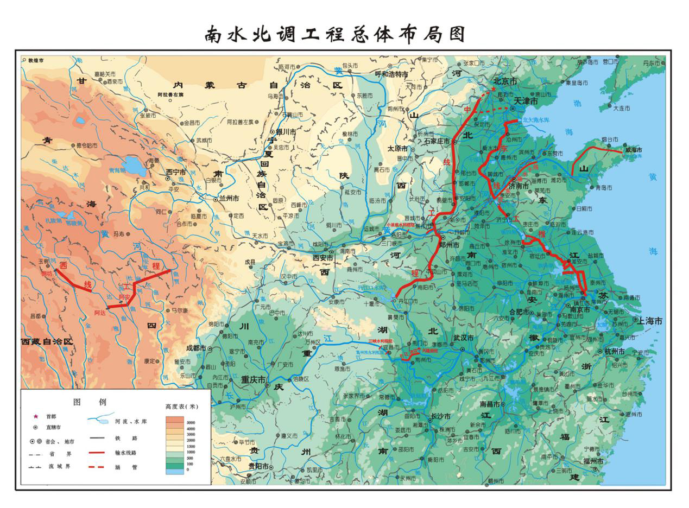

1952—1979 · EARLY CHRONICLE
世纪问水
大事记智能检索
从构想勘测、工程建设到移民安置与蓄水发电，以时间、人物、地点和事件为线索，在早期南水北调大事记中定位历史答案。
30条大事记
28年历史跨度
5主题阶段
输入你的问题
检索范围：1952—1979 年主题筛选
至
答案由现有大事记条目匹配生成，请结合下方关联条目核对。
1952—1979 年大事记
按时间顺序呈现，可输入自然语言问题缩小范围

1952—1979 · EARLY CHRONICLE
从构想勘测、工程建设到移民安置与蓄水发电，以时间、人物、地点和事件为线索，在早期南水北调大事记中定位历史答案。
答案由现有大事记条目匹配生成，请结合下方关联条目核对。
按时间顺序呈现，可输入自然语言问题缩小范围